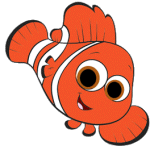
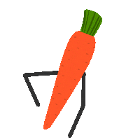

<HR SIZE=2 WIDTH=100% ALIGN=LEFT COLOR=red>
<h1 ALIGN=left >Żart o rybkach</h1>
<FIELDSET> <LEGEND> Rozmowa Jasia z mamą </LEGEND> Przychodzi Jasio do kuchni wieczorem i ma mokre włosy.
<br>
Mama pyta:<br>
-Jasiu czemu masz mokre włosy?<br>
A Jasiu na to:<br>
-Całowałem rybki na dobranoc.<br>



 </body>
</FIELDSET>
<HR SIZE=7 WIDTH=50% ALIGN=RIGHT COLOR=yellow>

<h2 ALIGN=CENTER >Żart o warzywach</h2>
<FIELDSET> <LEGEND> Na stoisku z warzywami </LEGEND> Podchodzi facet do stoiska z warzywami i pyta sprzedawczynię::<br>
-Czy te warzywa są modyfikowane genetycznie?
<br>
Sprzedawczyni:<br>
-A właściwie dlaczego pan się pyta?<br>
Marchewka:<br>
-No właśnie, dlaczego?<br>

</body>
</FIELDSET>
<HR SIZE=9 WIDTH=60% ALIGN=LEFT COLOR=blue>

<h3 ALIGN=RIGHT >Żart o komarach</h3>
<FIELDSET> <LEGEND> Komar uczy się latać </LEGEND>
Starszy komar pyta młodego: <br>
 -I jak ci idzie nauka latania?<br> <!- Kamil ZSE w Gdańsku nr.4 klasa 2F  -> 
-Chyba dobrze, bo jak latam, ludzie biją mi brawo.<br>


<body bgcolor="silver"></body>
</FIELDSET>
<HR SIZE=5 WIDTH=40% ALIGN=CENTER COLOR=pink> 
<br>

Imię ucznia &nbsp;&nbsp;&nbsp;&nbsp;&nbsp;&nbsp;&nbsp;&nbsp;&nbsp;&nbsp;&nbsp;&nbsp;&nbsp;Nazwisko ucznia
<p>Kamil &nbsp;&nbsp;&nbsp;&nbsp;&nbsp;&nbsp;&nbsp;&nbsp;&nbsp;&nbsp;&nbsp;&nbsp;&nbsp;&nbsp;&nbsp;&nbsp;&nbsp;&nbsp;&nbsp;&nbsp;Cur </p> 
<br>
<HR SIZE=5 WIDTH=100% ALIGN=LEFT COLOR=red>
<p>&#37; &#163; &#190; &#174; &#165; &#172; &#200;</p>
